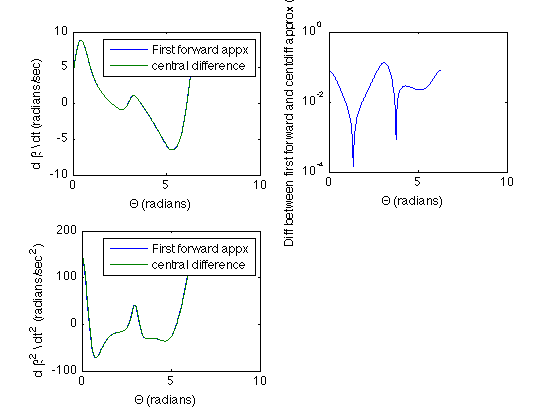

Contents
- Part i) Increment theta from 0 to 360 degrees and compute phi and
- compute the derivative, d phi/ dtheta using both the first forward
- plot the data. Plot the first forward difference and the central
- second plot of the difference between the two approximations
- Part ii) The second linkage problem. Determine alpha from the values
- compute the derivative of Beta wrt t. first need to compute the
- second derivatives of Beta wrt t, we first need the derivative of Beta
- plot these values
% FILE: Q2.m % AUTHOR: Chris Hoder % DATE: 10/5/2012 % CLASS: ENGS 91 % Laboratory 4 Question 2 % This code uses Cellular mode and the cells should be run in order as they % depend on information from previous cells.
Part i) Increment theta from 0 to 360 degrees and compute phi and
d phi/d theta.
clear clc %tolerance tol = 10e-10; %max number of iterations nMax = 1000; theta = 0:1:360; %convert to radians theta = theta*pi/180; %input the linkeage lengths of form [r1, r2, r3, r4] using lab 2 numbering %Lab3 len = [DC, CB , AB , DA ] %linkLength = [7, 2.36, 6.86, 1.94]; r1 = 7; r2 = 2.36; r3 = 6.86; r4 = 1.94; %for all the values of theta, find the theta2 (phi) and theta3. for i = 1:max(size(theta)); % need an initial guess going with theta2=30degree, theta3 = 0 if(i == 1), thetaIn = [30*pi/180 0]; % or use the previous value as our initial guess else thetaIn = [thetaVal(i-1,2) thetaVal(i-1,3)]; end % theta value thetaVal(i,1) = theta(i); %find solution using newton's method thetaTemp = newtonSys2(thetaIn,tol,nMax,theta(i)+pi,r1,r2,r3,r4); %find theta2, theta3 thetaVal(i,2) = thetaTemp(end,1); thetaVal(i,3) = thetaTemp(end,2); end
compute the derivative, d phi/ dtheta using both the first forward
difference (feed_forward) and the central difference approximation (central).
% get phi from previous solutions phi = thetaVal(:,2); % For each value of phi compute the derivative 2 different ways, first % forward difference or central difference methods. also compute the % difference. for i=1:max(size(phi))-1, %this should just be 1 in our case, but leaving general so that we can %change h h = theta(i+1) - theta(i); %this is the forward derivative feed_forward(i) = (phi(i+1)-phi(i))/(h); %can't compute the central difference derivative with the first point so %we must start at i=2 if(i > 1), central(i) = (phi(i+1) - phi(i-1))/(2*h); difference(i) = abs(feed_forward(i)-central(i)); end end
plot the data. Plot the first forward difference and the central
difference approximations on teh same plot. Also plot phi vs theta
subplot(1,2,1) plot(theta(2:end-1),central(2:end),theta(1:end-1),feed_forward()) xlabel('\theta (radians)') ylabel('d\phi / d\theta (radians/radian)'); legend('Central diffrence appx','first forward difference'); subplot(1,2,2) plot(theta,phi); xlabel('\theta (radians)'); ylabel('\phi (radians)');
second plot of the difference between the two approximations
cla semilogy(theta(2:end-1),difference(2:end)); xlabel('\Theta (radians)'); ylabel('Difference (radians/radian)'); ylabel(['Difference between first forward and central difference',... 'approx (radians)']);
Part ii) The second linkage problem. Determine alpha from the values
of phi, alpha = phi + 149 degrees. Compute Beta, dBeta/dt and dBeta/dt^2.
% we can conclude through geometry that % alpha = phi + 149(degrees) % Inorder to use this in the code developed for lab 2 we will define % theta 2 = Beta and theta4 = 180(degrees) + alpha %for each phi value, we need to calculate beta % [ CG GF EF CE] r1 = 1.25; %in CG r2 = 1.26; %in GF r3 = 1.87; %in EF r4 = 2.39; %in CE % for each value of phi for i= 1:max(size(phi)), % for the first one make a guess if(i == 1), thetaIn = [30*pi/180 0]; % or take the previous theta value as the initial guess else thetaIn = [thetaVal2(i-1,2) thetaVal2(i-1,3)]; end %save the values thetaVal2(i,1) = theta(i); %compute the solution theta2 and theta3 thetaTemp = newtonSys2(thetaIn,tol,nMax,(phi(i)+pi+(149*pi/180)),... r1,r2,r3,r4); thetaVal2(i,2) = thetaTemp(end,1); thetaVal2(i,3) = thetaTemp(end,2); end
compute the derivative of Beta wrt t. first need to compute the
derivative of Beta with respect to theta. the conversion will then be made using omega. NOTE: dBeta/dt = omega * dbeta/dtheta dBeta^2/dt^2 = omega^2 * dbeta^2/dtheta^2
%get beta values from previous run of newton's method. we must convert back %to degrees beta = thetaVal2(:,2); %Compute the first derivatives. for i = 1:max(size(beta))-1 %this should just be 1 in our case, but leaving general so that we can %change h h = theta(i+1) - theta(i); %this is the forward derivative feed_forward2(i) = (beta(i+1)-beta(i))/(h); % central differences derivatives requires a point behind it. if(i > 1), central2(i) = (beta(i+1) - beta(i-1))/(2*h); difference2(i) = abs(feed_forward(i)-central(i)); end end
second derivatives of Beta wrt t, we first need the derivative of Beta
with respect to theta. we can then convert to a derivative with respect to t with omega
%For each point we can compute the second derivative for i = 1:max(size(beta))-2, %this should just be 1 in our case, but leaving general so that we can %change h h = theta(i+1) - theta(i); %forward derivative feed_forward2nd(i) = (beta(i+2)-2*beta(i+1)+beta(i))/(h^2); %2nd derivative if( i>1), central_2nd(i) = (beta(i+1)+beta(i-1)-2*beta(i))/(h^2); difference3(i) = abs(feed_forward2nd(i)-central_2nd(i)); end end %change variables from dBeta/dTheta to dBeta/dt by accounting for omega %which we are assuming is 450 rad/sec. omega = 450/60; % rad/sec dBdt_fforward = omega * feed_forward2; dBdt_central = omega * central2; dBdt_diff = omega * difference2; dB2dt2_fforward = omega^2* feed_forward2nd; dB2dt2_central = omega^2* central_2nd; dB2dt2_diff = omega^2* difference3;
plot these values
cla % plot the first derivatives on same graph subplot(2,2,1); plot(theta(1:end-1),dBdt_fforward,theta(2:end-1),dBdt_central(2:end)); xlabel('\Theta (radians)'); ylabel('d \beta \\ dt (radians/sec)') legend('First forward appx','central difference'); %plot the difference between first forward approx and the central %difference approx subplot(2,2,2) semilogy(theta(2:end-1),dBdt_diff(2:end)) xlabel('\Theta (radians)') ylabel(['Diff between first forward and cent',... 'diff approx (rad/sec']); %plot the 2nd derivative subplot(2,2,3); plot(theta(1:end-2), dB2dt2_fforward,theta(2:end-2),dB2dt2_central(2:end)); xlabel('\Theta (radians)'); ylabel('d \beta^2 \\ dt^2 (radians/sec^2)'); legend('First forward appx','central difference');